Butter Chicken
Famous North Indian Punjabi dish prepared with chicken, butter, creamy tomato gravy and rich spices.
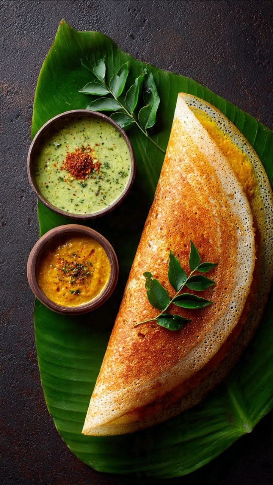
Dosa
Traditional South Indian crispy fermented rice pancake served with chutney and sambar.
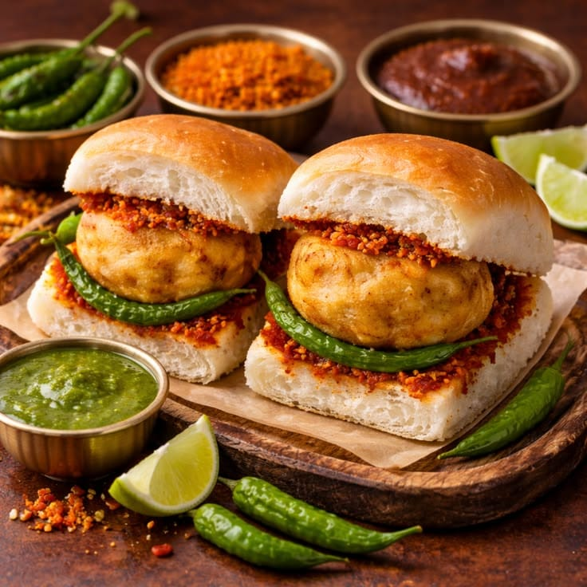
Vada Pav
Popular Maharashtrian street food made with spiced potato filling and bread, known as Mumbai's famous snack.
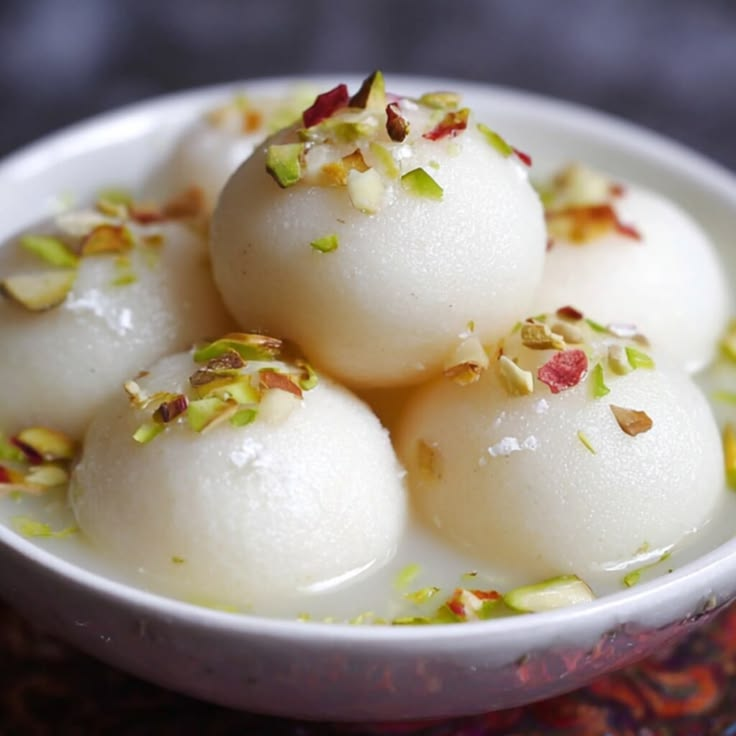
Rasgulla
Traditional Bengali sweet made with soft cottage cheese balls simmered in sugar syrup.
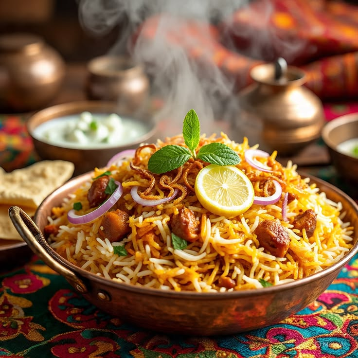
Biryani
Aromatic basmati rice dish prepared with whole spices and vegetables or meat.
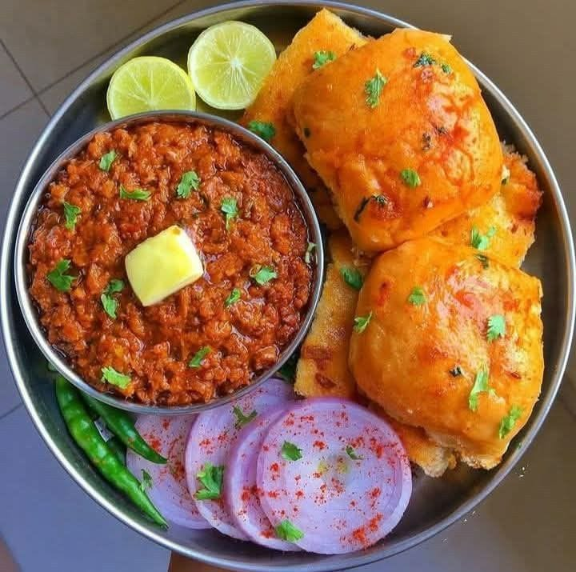
Pav Bhaji
Popular Mumbai street food consisting of spicy mashed vegetable curry served with buttered bread.
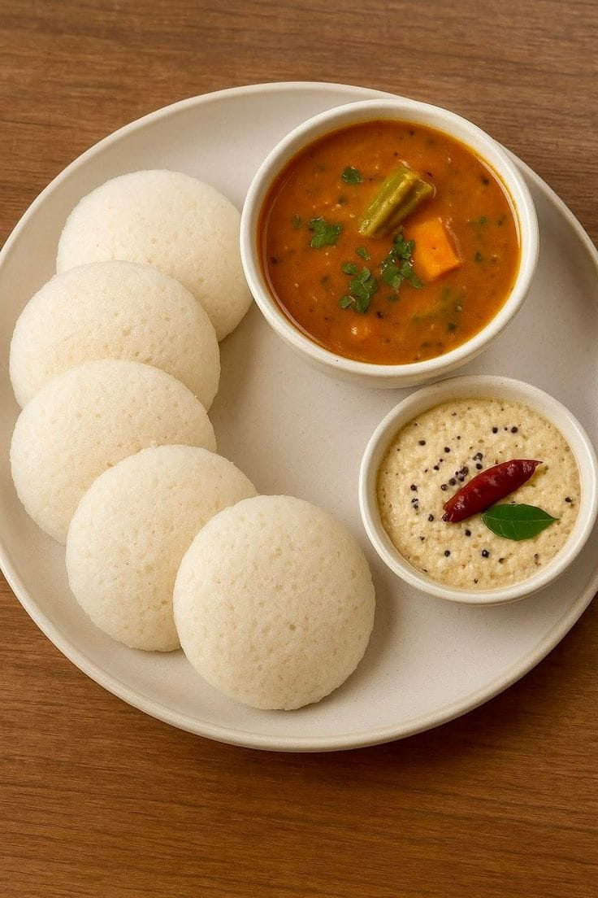
Idli
Soft, fluffy steamed rice cakes served with coconut chutney and hot sambar.
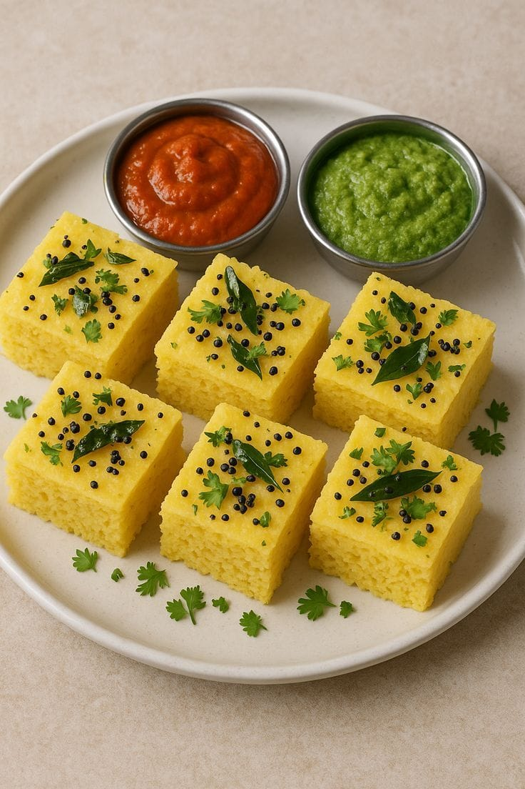
Dhokla
Gujarati steamed fermented batter snack with a light, spongy texture and delicious taste.
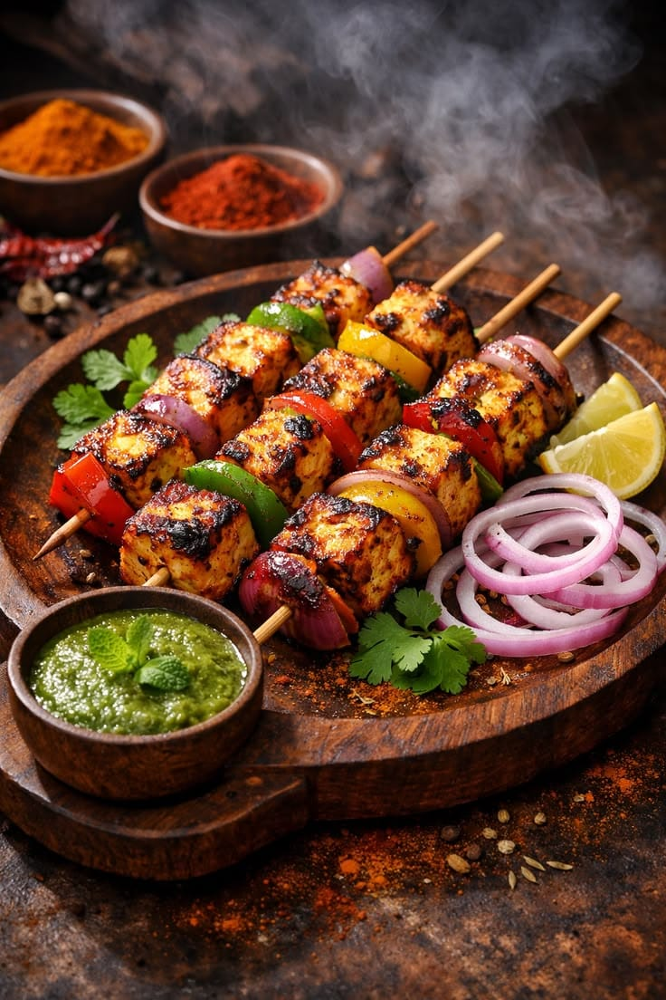
Paneer Tikka
Grilled cottage cheese cubes marinated in yogurt spices, skewers, and bell peppers.
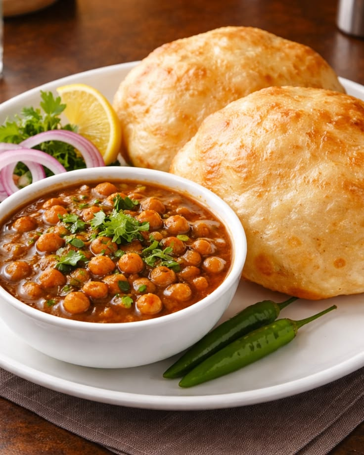
Chole Bhature
Popular Punjabi combination of spicy chickpea curry paired with deep-fried fluffy bread.
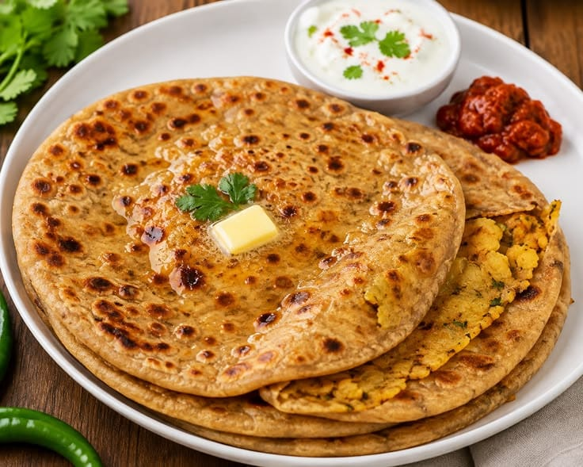
Paratha
Traditional stuffed Indian flatbread layered with spiced potatoes or herbs, served with curd and pickles.
Sambar
Traditional South Indian lentil-based vegetable stew cooked with tamarind broth and aromatic spices.
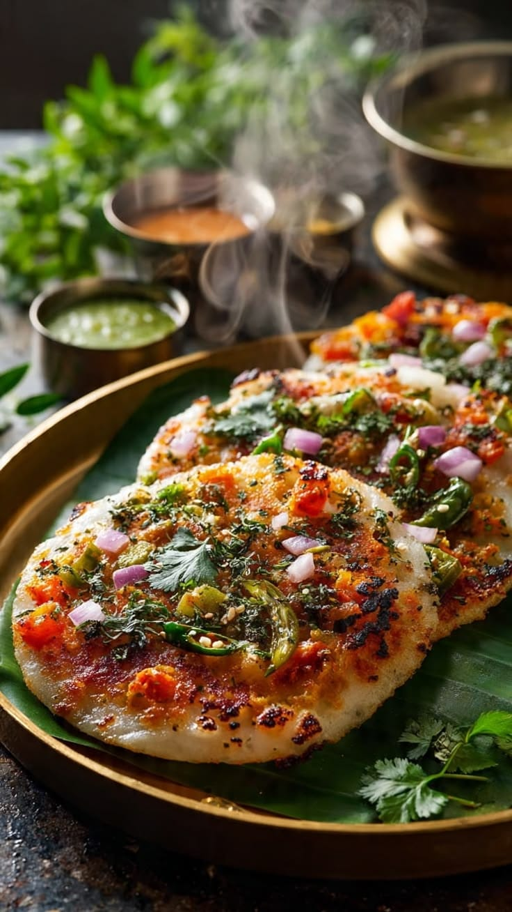
Uttapam
Thick, soft rice pancake topped cooked with onions, tomatoes, and green chilies.
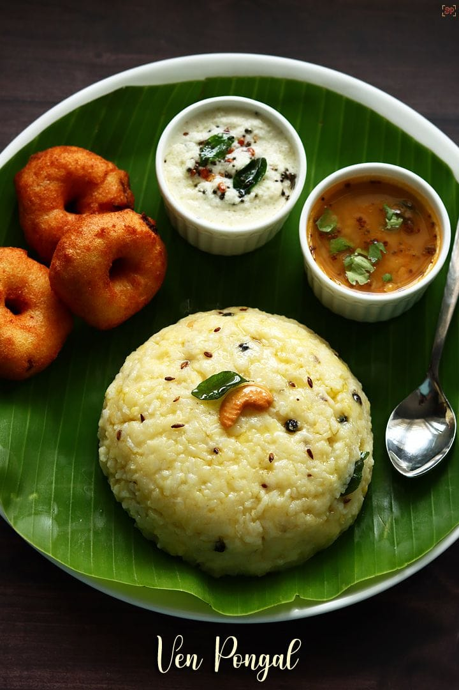
Pongal
Traditional rice and moong dal savory dish tempered with cumin, black pepper, and cashews prepared during harvest festivals.
Fish Curry
Popular Bengali dish prepared with fresh fish, mustard seeds, and traditional regional spices.
Macher Jhol
Traditional light Bengali fish stew cooked with turmeric, green chilies, and Nigella seeds.
Sandesh
Delicious Bengali sweet prepared with fresh cottage cheese, cardamom, and saffron or jaggery.
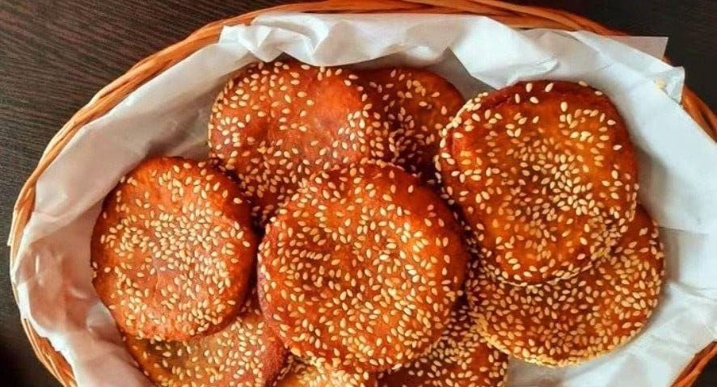
Pitha
Traditional rice-based sweet or savory dumpling dish popular in Eastern India during harvest seasons.
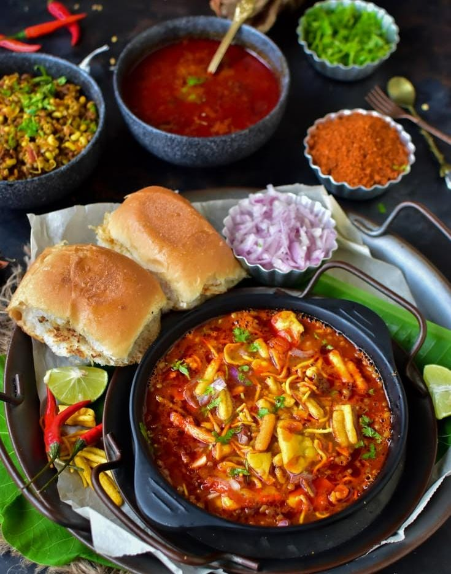
Misal Pav
Maharashtrian spicy sprouted moth bean curry topped with farsan, onions, coriander, and served with bread.
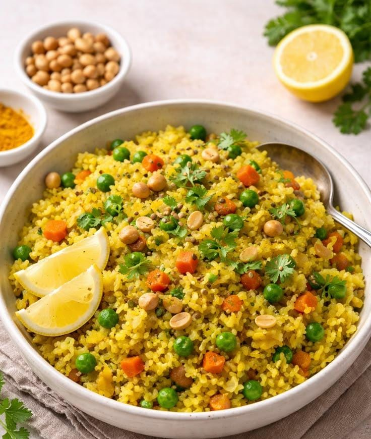
Poha
Popular light breakfast dish made of flattened rice tempered with mustard seeds, peanuts, and turmeric in Maharashtra and Madhya Pradesh.